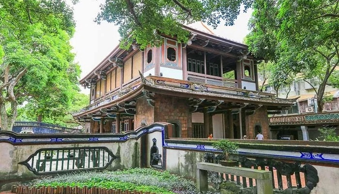

網美打卡之旅

府中站
台灣文學基地，坐落於齊東街日式宿舍群中，是少數保存最完整的區域，現在的台灣文學基地不定期的舉辦藝文特展和文化創作，成為文學活動的交流場域。
林家花園，台灣僅存最完整的園林建築，江南庭園的風格是台灣古式庭園的代表，建築中也有很多以前的裝飾和用品展出，園中有時也會有些小活動可以參加。

台北101/世貿站
四四南村，是政府在台灣建立的第一座眷村，保留了四四兵工廠的廠工村落。雖然坐落在繁華的信義區，卻能在這裡感到沉靜放鬆。
眷村文物館，在四四南村中，以博物館的形式向大家展示台灣獨特的眷村文化，屋內還原當年的陳設，讓大家可以進去參觀。

新北投站
北投溫泉博物館，是當時東亞最大的溫泉公共浴場，現在的館內主要介紹了北投的歷史和發展，也有很多跟溫泉相關的展示品。
梅庭，是一棟見證了戰爭時代的日式民宅建築，曾是一代草聖于右任的避暑別館
新北投車站，當初為了發展溫泉觀光產業而建，現在是台北市僅存的百年車站，裡面展示了許多以前的歷史。
地熱谷，終年瀰漫硫磺煙霧，又被稱為地獄谷或鬼湖。是日治時代台灣的八景十二勝之一。